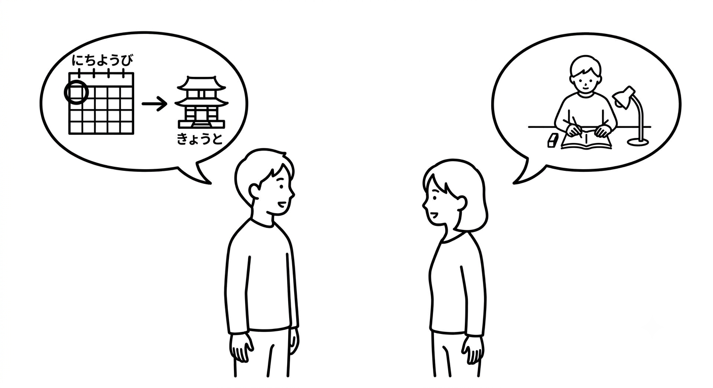
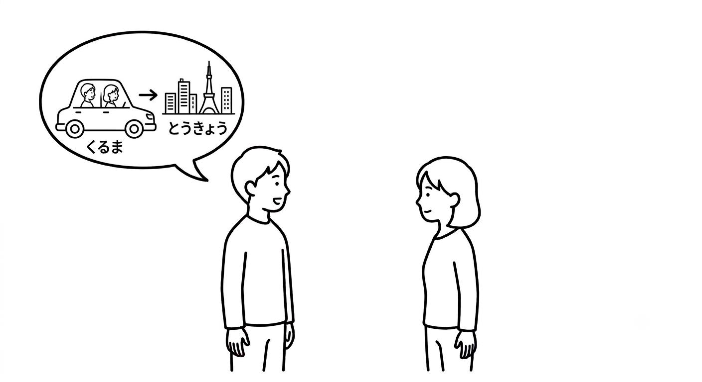

← 戻る
第5課 〇〇へ・〇〇で・〇〇と・疑問詞（ぎもんし）
目次
- 〇〇へ
- 〇〇で
- 〇〇と
- 疑問詞（ぎもんし）
- れんしゅう
- かんじリスト
〇〇へ
- へ = to, direction (toward)
- You read "え"
- 私（わたし）は 京都（きょうと）へ 行（い）きます。→ I'm going to Kyoto.
- 明日（あした）どこへ 行きますか。→ Where are you going tomorrow?
- →群馬（ぐんま）へ 行きます。→ I'm going to Gunma.
〇〇で
- で = place of action / means
- 場所（ばしょ）：where the action takes place、手段（しゅだん）：by means of
- 何（なに）で 京都（きょうと）へ 行きましたか。→ How did you get to Kyoto?
- →電車（でんしゃ）で 行きました。→ I went by train.
〇〇と
- と = and / together with
- 並列（へいれつ）：and（things）、共同（きょうどう）：together with（people）
- 山田（やまだ）さんと 行きます。→ I'm going with Yamada-san.
- ※ If you want to say "by myself", use "ひとりで"
- ひとりで メキシコに 行きました。→ I went to Mexico by myself.
疑問詞（ぎもんし）
- 誰（だれ）= who
- 誰と 京都（きょうと）へ 行きますか。→ Who are you going to Kyoto with?
- →山田（やまだ）さんと 行きます。→ I'm going with Yamada-san.
- いつ = when
- いつ 群馬（ぐんま）へ 行きましたか。→ When did you go to Gunma?
- →１０月に 行きました。→ I went in October.
- たんじょうびは いつですか。→ When is your birthday?
- どこ = where
- 日曜日（にちようび）どこへ 行きましたか。→ Where did you go on Sunday?
- →東京（とうきょう）へ 行きました。→ I went to Tokyo.
- →どこへも 行きませんでした。→ I didn't go anywhere.
※ In negative sentences, add も to any/no~ words（どこへも、だれとも、いつも...）
れんしゅう
Let's make a conversation!


かんじリスト
| 漢字 | 読み方 | 意味 |
|---|
| 京都 | きょうと | Kyoto |
| 群馬 | ぐんま | Gunma |
| 電車 | でんしゃ | train |
| 山田 | やまだ | Yamada (name) |
| 行きます | いきます | go |